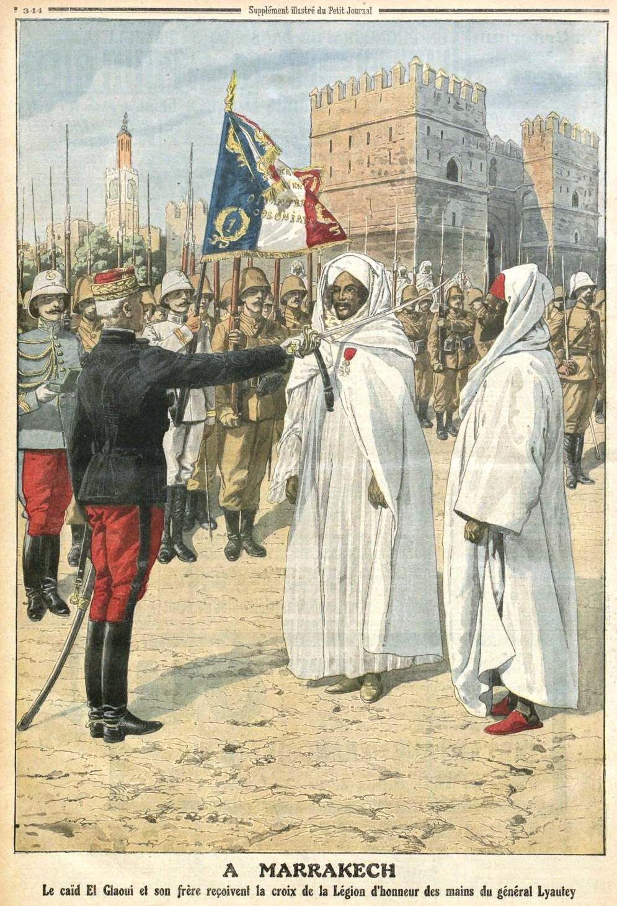

Precolonial collaborators with European colonial authorities
Samy Y.
In the 19th century, agriculture in Morocco underwent significant changes, marked by increased irrigation efforts, crop diversification, and the introduction of new farming practices. Despite facing challenges such as droughts, civil wars and limited transportation, it continued to evolve up until the advent of the French Protectorate in 1912...
Test Article